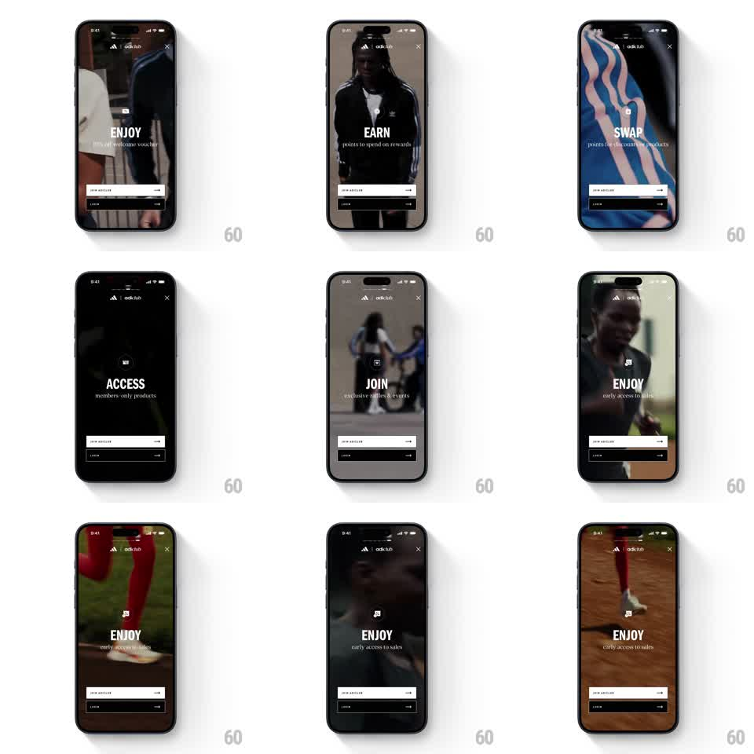

Media
Frame-by-frame

Rebuild this interaction 1:1: adiClub's story-style onboarding - fullscreen looping videos behind segmented progress bars, with a big word (ENJOY, EARN, SWAP, ACCESS, JOIN) and one line of copy per segment, auto-advancing like a story.

Rebuild this interaction 1:1: adiClub's story-style onboarding - fullscreen looping videos behind segmented progress bars, with a big word (ENJOY, EARN, SWAP, ACCESS, JOIN) and one line of copy per segment, auto-advancing like a story. ## Integration Integration: stack-agnostic spec - springs given as stiffness/damping, timed motions as duration + curve; map every value to your framework and animation library of choice. ## Scene Adidas adiClub intro, fullscreen video background (people, product macro shots): top bar with the adidas + adiclub lockup and a close X, a row of segmented progress bars under it, a centered segment icon, a large uppercase headline with subcopy, and pinned bottom buttons - "JOIN ADICLUB" (white) and "LOGIN" (black). ## Motion spec Pattern: auto-advancing story segments over crossfading video. - Each segment runs ~5s: its progress bar fills left to right in real time (linear); completed bars stay solid, upcoming bars stay at 25% opacity. - On advance: the video crossfades to the next clip (400ms); the segment icon, headline, and subcopy rise in (translateY 14 -> 0, fade, 300ms, staggered icon -> headline -> copy by 60ms). - Outgoing copy exits fast (fade + rise 8px, 150ms) just before the video crossfade. - Tap right/left edge: skip to next/previous segment - the current bar snaps full/empty (100ms) and the same transition plays. - Hold (touch and hold center): the current video pauses and the progress bar freezes; release resumes both. - Final segment holds on "JOIN" and loops its video until the user acts. ## Calibration - Copy sits dead-center; buttons never move - only the story layer animates. - Videos are high-contrast and dark enough that white copy always reads; add a subtle bottom gradient. ## Reduced motion Static poster frame per segment; progress bars fill but videos don't play. ## Don't miss - The progress bars animate at the video's real frame rate - no steppy fill. - The close X is always one tap, top right, never hidden behind the story chrome.